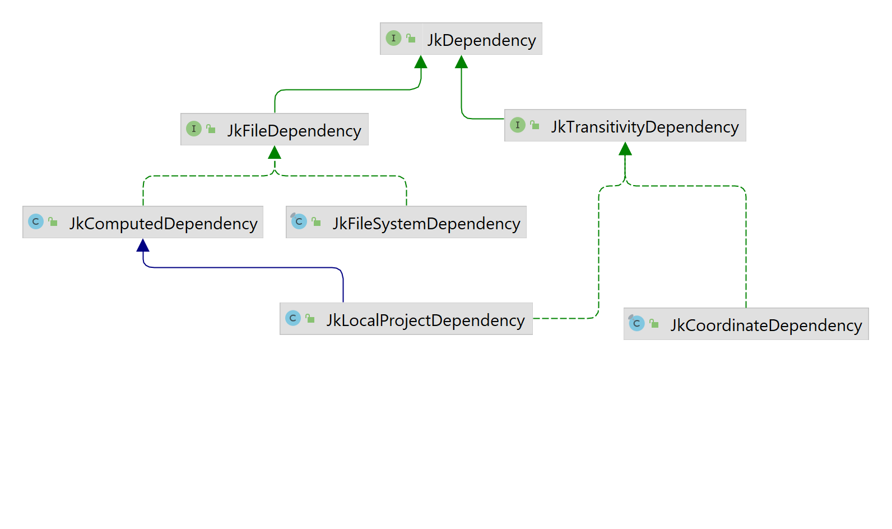

Delependency Management
For Jeka, a dependency is something that can be resolved to a set of files by a JkDependencyResolver.
Generally a dependency resolves to 1 file (or folder) but it can be 0 or many.
Compared to mainstream build tools, Jeka offers a simpler and more flexible model to deals with multiple dependency configurations required for building a project. See project dependencies
Types of Dependency¶
A dependency is always an instance of JkDependency.
Jeka distinguishes mainly 3 types of dependency :
- Arbitrary files located on the file system (represented by
JkFileSystemDependencyclass). These files are assumed to be present on the file system when the build is running. - Files produced by a computation (represented by
JkComputedDependencyclass). These files may be present on file system or not. If they are not present, the computation is run in order to produce the missing files. Generally the computation stands for the build of an external project. - Coordinate pointing to a remote artifact (represented by
JkCoordinateDependency) hosted in a binary repository (Ivy or Maven for instance) : Jeka can consume and resolve transitively any artifact located in a repository as you would do with Maven, Ivy or Gradle.
For the last, Jeka is using Ivy 2.5.0 under the hood. Jeka jar embeds Ivy and executes it in a dedicated classloader to be hidden for client code.

Coordinate dependency¶
This type of dependency is represented by JkCoordinateDependency class.
It stands for a Maven/Ivy dependency expressed with coordinates (e.g. _group:module:version).
This is for declaring a dependency on module hosted in Maven or Ivy repository.
Basically you instantiate a JkCoordinateDependency from it's group, name and version.
JkDependencySet.of()
.and(JkPopularModule.GUAVA, "18.0")
.and("com.orientechnologies:orientdb-client:[2.0.8, 2.1.0[")
.and("mygroup:mymodule:myclassifier:0.2-SNAPSHOT");
Many string formats are accepted to specify a module coordinate :
- group:name
- group:name:version
- group:name:classifier:version
- group:name:classifier:extension:version
Classifier can be either :
- an empty string to specify the default classifier
- a simple string as 'linux' to specify a retrieve a single classifier variant
Note
By default, dependencies specifying a classifier or an extension are not considered as transitive. Tough, transitivity can be explicitly configured.
Version can be either :
- a static version number, as 1.0.2
- a snapshot version, as 1.0.2-SNAPSHOT
- a version range, as [2.0.8, 2.1.0[
Examples :
- com.sun.jersey:jersey-server : specify artifact without version
- com.sun.jersey:jersey-server:1.19.4 : specify artifact with version
- org.lwjgl:lwjgl:natives_linux:3.1.0 : specify artifact having natives_linux classifier and 3.1.0 version
- org.springframework.boot:spring-boot-dependencies::pom:2.5.6 specify artifact having .pom extension (to retrieve a BOM)
Note
- A version ending by
-SNAPSHOThas a special meaning : Jeka will consider it "changing". This means that it won't cache it locally and will download the latest version from repository. - As Jeka relies on Ivy under the hood, it accepts dynamic versions as mentioned here.
- Dependency files are downloaded in [USER HOME]/.jeka/cache/repo
Additionally, it's possible to define the transitivity of the dependency using :
JkModuleDependency.of("group:name:sources:zip:version").withTransitivity(JkTransitivity.NONE);
By default, Jeka uses the most relevant transitivity according the declaration context, so users don't need to specify it unless they want a specific one.
See later for more details about transitivity.
File System Dependencies¶
This type of dependency is represented by JkFileSystemDependency class.
Just mention the path of one or several files. If one of the files does not exist at resolution time (when the dependency is actually retrieved), build fails.
Computed Dependencies¶
This type of dependency is represented by JkComputedDependency class.
It is typically used for multi-modules or multi-techno projects.
The principle is that if the specified files are not present, the computation is run in order to generate the missing files. If some files still missing after the computation has run, the build fails.
This mechanism is quite simple yet powerful as it addresses following use cases :
- Dependencies on files produced by an artifact producer (
JkArtifactProducer). AJkProjectis an artifact producer. - Dependencies on files produced by external build tool (Ant, Maven, Gradle, SBT, Android SDK, Make, npm ...).
- ... In other words, files produced by any means.
The generic way is to construct this kind of dependency using a java.lang.Runnable.
The following snippet constructs a set of dependencies on two external projects : one is built with Maven, the other with Jeka.
Path mavenProject = Paths.get("../a-maven-project");
JkProcess mavenBuild = JkProcess.of("mvn", "clean", "install")
.withWorkingDir(mavenProject);
Path mavenProjectJar = mavenProject.resolve("target/maven-project.jar");
JkJavaProject externalProject =
JkJavaProject.ofSimple(Paths.get("../a-jeka-project"));
JkDependencySet deps = JkDependencySet.of()
.and(JkComputedDependency.of(mavenBuild, mavenProjectJar))
.and(externalProject);
Dependency Set¶
A dependency set (JkDependencySet) is an ordered bunch of dependencies used for a given purpose (compilation,
war packaging, testing, ...). It can contain any kind of JkDependency. See here
dependencySet also defines :
- A version provider to define which version of a module we should use in case it is not explicitly mentioned.
- A set of transitive dependency exclusion rules.
It is designed as an immutable object where we can apply set theory operations for adding, removing or merging with other dependencies and dependencySet.
Example
Note
- Module version and scopes can be omitted when declaring dependencies. Versions can be provided by a
JkVersionProvider. - Instances of
JkDependencySetcan be combined together in order to construct large dependencySet from smaller ones.
Transitivity¶
For each dependency, mainstream build tools use a single concept (scope or configuration) to determine both :
- which part of the build needs the dependency
- which transitive dependencies to fetch along the dependency
- with which transitivity the dependency must be published
This confusion leads in dependency management systems that are bloated, difficult to reason about and not quite flexible. Gradle comes with a proliferation of 'configurations' to cover most use case combinations, while Maven narrows 'scopes' to a fewer but with limitations and not-so-clear transitivity/publish rules.
In the opposite, Jeka distinguishes clearly the three purposes :
- Jeka uses distinct dependencySet instances for each part of the build (compile, runtime, test,...). Each can be defined relatively to another using set theory operations.
- For each dependency, we can decide its transitivity, that is, the transitive dependencies fetched along the dependency.
- For publishing, we can optionally re-define a specific dependencySet, exposing exactly what we want.
Jeka defines by default, 3 levels of transitivity :
- NONE : Not transitive
- COMPILE : Also fetch transitive dependencies declared with scope 'compile' in the dependency published pom.
- RUNTIME : Also fetch transitive dependencies declared with any scope in the dependency published pom.
Notes
On Maven repositories, published poms can declare only two scopes for transitive dependencies : 'compile' and 'runtime'.
For Ivy repositories, it is possible to declare a specific transitivity that maps to a slave 'configuration'.
The below example shows a JkJavaProject declaration using explicit transitivity.
JkJavaProject.of().simpleFacade()
.configureCompileDeps(deps -> deps
.and("com.google.guava:guava:23.0", JkTransitivity.NONE)
.and("javax.servlet:javax.servlet-api:4.0.1"))
.configureRuntimeDeps(deps -> deps
.and("org.postgresql:postgresql:42.2.19")
.withTransitivity("com.google.guava:guava", JkTransitivity.RUNTIME)
.minus("javax.servlet:javax.servlet-api"))
.configureTestDeps(deps -> deps
.and(Hint.first(), "org.mockito:mockito-core:2.10.0")
)
Declared Compile Dependencies : 2 elements.
com.google.guava:guava:23.0 transitivity:NONE
javax.servlet:javax.servlet-api:4.0.1
Declared Runtime Dependencies : 2 elements.
com.google.guava:guava:23.0 transitivity:RUNTIME
org.postgresql:postgresql:42.2.19
Declared Test Dependencies : 4 elements.
org.mockito:mockito-core:2.10.0
com.google.guava:guava:23.0 transitivity:RUNTIME
org.postgresql:postgresql:42.2.19
javax.servlet:javax.servlet-api:4.0.1
The API allows to redefine the transitivity declared in a upper dependency set.
Note that transitivity can only apply to JkModuleDependency (like com.google.guava:guava:23.0)
and JkLocalProjectDependency.
Resolve Dependencies¶
The JkDependencyResolver class is responsible JkDependencyResolver.of(JkRepo.ofMavenCentral());to resolve dependencies by returning JkResolveResult from a
JkdependencySet.
JkDependencySet deps = JkDependencySet.of()
.and("org.apache.httpcomponents:httpclient:4.5.3")
.andFile("libs/my.jar");
// Here, module dependencies are fetched from Maven central repo
JkDependencyResolver resolver =
JkDependencyResolver.of(JkRepo.ofMavenCentral());
JkResolveResult result = resolver().resolve(deps);
From the result you can :
- Navigate in the resolved dependency tree as :
JkDependencyNode slfjApiNodeDep = result.getDependencyTree()
.getFirst(JkModuleId.of("org.slf4j:slf4j-api"));
System.out.println(slfjApiNode.getModuleInfo().getResolvedVersion());
- Get the direct list of artifact files
JkPathSequence sequence = result.getFiles();
sequence.forEach(System.out::println); // print each files part of the result
Publication¶
Jeka is able to publish on both Maven and Ivy repository. This includes repositories as Sonatype Nexus.
Maven and Ivy have different publication model, so Jeka proposes specific APIs according you want to publish on a Maven or Ivy repository.
Publish to a Maven repository¶
Jeka proposes a complete API to pubish on Maven repository. POM files will be generated by Jeka according provided elements.
Find an example here
Notice that Jeka allows to :
- Publish more than one artifact.
- Produce & publish checksum files for each published artifact.
- Mention to use unique snapshot (What is it ?).
- Feed generated pom with data necessary to publish on central repository.
- Sign published artifact with PGP
- Publish to multiple repository by creating the publisher using a
JkRepoSetinstead of aJkRepo.
To sign with PGP, no need to have PGP installed on Jeka machine. Jeka uses Bouncy Castle internally to sign artifacts.
Publish to a Ivy repository¶
Publishing on Ivy repo is pretty similar than on Maven though there is specific options to Ivy.
See also here
Common Classes¶
-
JkRepoandJkRepoSetrepresent both download and upload repositories. -
JkRepoFromPropertiesprovides configured repositories according global or project scopes properties. -
JkDependencySetrepresents a set of dependencies. -
JkDependencyResolverresolve dependencies to classpath and resolution result that allow resolution exploration. -
JkModuleFileProxyprovides an smart way to get a file from its coordinates.